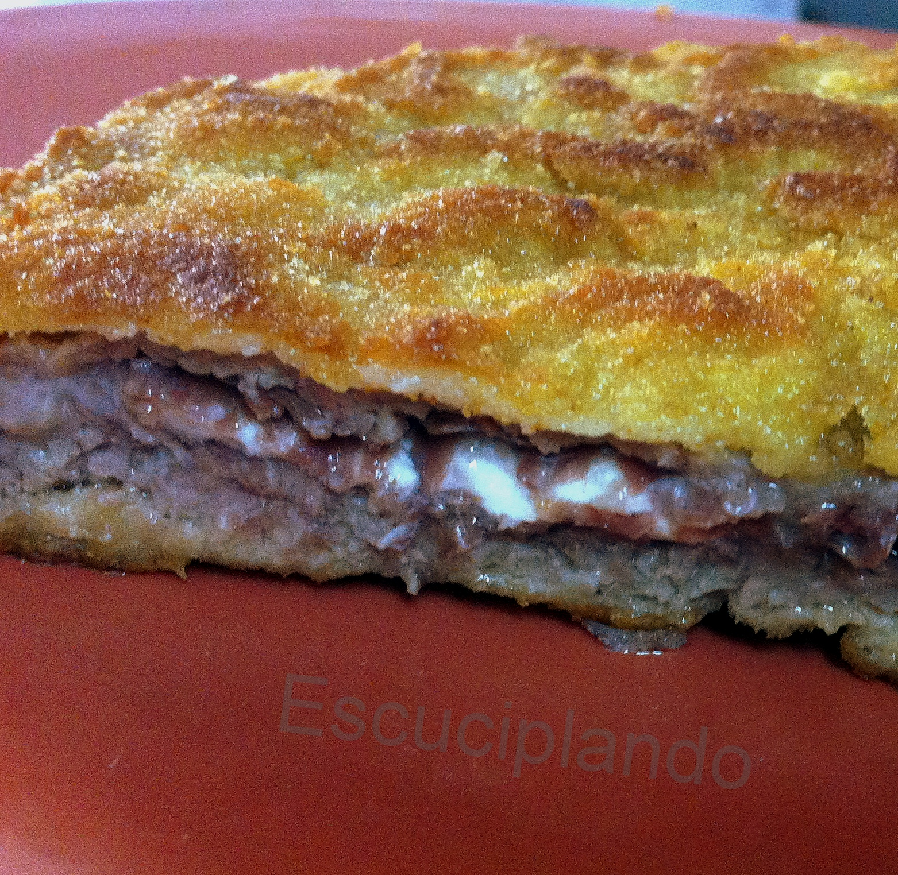
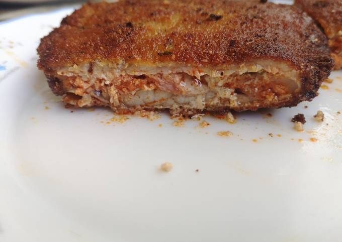

El cachopo de ternera tradicional es una receta asturiana que consiste en dos filete de ternera (preferiblemente asturiana) que hacen de «tapa» para un relleno formado por jamón ibérico y queso. Posteriormente se empana todo y se fríe.
Al igual que ocurre con otros platos típicos como la paella valenciana o el cocido madrileño, las continuas variaciones de la preparación original hace que muchas veces la recetas disten mucho unas de otras.
Cachopo de cecina y queso de cabra
El cachopo relleno de cecina y queso de cabra es una variante de la receta original que consiste en dos filete de ternera (preferiblemente asturiana), relleno a base de queso de cabra y cecina.
Como acompañamiento tendremos unos deliciosos aros de cebolla y mermelada de tomate.

Cachopo de picadillo y queso de Cabrales
Sirve en tu mesa todo el sabor de la tierra con este cachopo asturiano de picadillo y cabrales. Ahora es posible cocinar comida asturiana sin salir de casa con nuestro servicio de compra online.

Preparamos el cachopo al momento del encargo. Y lo enviamos a casa en un máximo de 72 horas laborables desde que haces tu pedido.